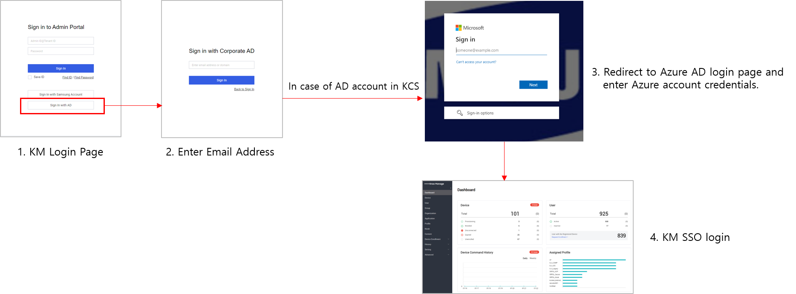

Knox Manage 21.09 release notes
Last updated July 26th, 2023
This Knox Manage 21.09 release scheduled to go live on September 1st, 2021 includes several improvements and enhancements to existing features and functionality.
Highlights
The following features constitute the highlights of this release:
- Integration with Knox MSP Program
- Enhancements to MDM device security
- Use Azure AD SSO in KM direct login
- Bulk enrollment for Windows 10 devices
- MGP application enhancements
- Shared device enhancements
Knox Service integration
Knox MSP Program integration
Starting with this release, Knox Manage (KM) is now included as one of the services available from within the Knox MSP Program. This integration with the Knox cloud service allows a unified customer management experience, so that KM now works within the same framework as other Knox services such as Knox Portal and Knox License. KM users have a Samsung Account like all other Knox cloud service components, but does not have its own Samsung admin portal. This change means that user application approval happens within the Knox portal.
The following KM functionality is available from within the Knox MSP Program:
-
Add KM Customer — The Knox MSP Program can add a new Knox Manage customer from within the Knox MSP Portal. When adding a new customer, the Knox MSP Program can provide all necessary and mandatory KM information such as customer ID, organizational information, and any other information needed to onboard the customer. By default, when adding a new customer, the customer’s access permissions are set to No access, meaning the customer cannot access the Knox cloud service portal and is fully managed by the Knox MSP Program. The Knox MSP Program can change this permission to Full access, meaning the customer can access the Knox cloud service portal and is jointly managed by the Knox MSP Program.
-
KM SSO login from the Knox MSP Portal — Users of the Knox MSP Portal can now access the KM console with their single sign-on login credentials. To access the KM console, go to left hand navigation menu > Customers > List of customers > click Active to open the KM console in a new browser tab.
-
Change customer access permissions — Knox MSP Program users can also change the access permissions for KM customers from within the Knox MSP Portal. Note that the Knox MSP Program cannot change the access permission for a Full access customer into a No access customer. Once the access permissions are changed, the customer receives an email notification with details about the change as well as complete Knox portal registration information that they can use to log in to the Knox MSP Portal.
-
KM service delink — Fully managed customers who have access to the Knox MSP Portal and jointly manage their account can also request to revoke the access rights of the Knox MSP Program to their account. This request is known as a KM service delink request. Once the request is accepted, the Knox MSP Program does not have access to the customer’s account.
-
Migrate existing KM tenants — Knox MSP Portal admins can also migrate existing KM customers to the Knox MSP Portal.
-
KM notifications on Knox MSP Portal — Any notifications set up for customer accounts on KM are also shown on the Knox MSP Portal, including but not limited to: expired licenses, add new administrators, or add a new KM customer tenant. To view these notifications, on the Knox MSP Portal’s left navigation menu, go to the Dashboard.
-
View KM and Knox Services license usage — Knox MSP Program admins can also view details of the Knox Manage and Knox services’ license usage, such as:
- Purchased seats
- Remaining seats
- Used seats of KM or KS
- License key information
Azure AD SSO in KM Direct Login
Going forward, KM users can now use their Knox cloud service’s Azure AD single sign-on login to log in to Knox Manage. For more information about how to log in to the Knox cloud service portal, including KM, using Azure AD SSO, see Sign in with Azure AD.

Windows 10 bulk enrollment
With this release, KM now supports bulk enrollment of Windows 10 devices based on provisioning packages (PPKG). The process includes the following stages:
- Create PPKG
- Deliver PPKG
- Install PPKG
- Install and Enroll KM Client
Depending upon the purpose and specific customer needs, the IT admin can choose to assign one of three user types. The following image describes these three types:
Assign users
Assign a default user
To assign a user, do as follows:
-
In the KM console, go to Device Enrollment > Windows > Enrollment Setting > scroll to the User Assign section.
-
Specify whether the user is a default user or not by selecting a value for the Using Default User field:
- Yes — Choose this option if you want to assign this user as a default user for all appropriate devices.
- No — Choose this option if you do not want to assign this user as a default user.
-
Specify a value for the User ID field by clicking Select. On the dialog that opens, scroll to select the appropriate user ID.
-
Click Save to save your changes.
Assign bulk users
Bulk assignment of users is available as an option before you can assign a default user. To assign users in bulk, do as follows:
Before you can use automatic assignment on devices, you must set the device name to the serial number.
-
In the KM console, go to Device Enrollment > Windows > Device Management > click Bulk Assign User.
-
In the Bulk Assign Users dialog that opens, click Download Template to download an Excel file that you can customize to include the appropriate user and device information. Ensure that the file you create has Digital Rights Management (DRM) disabled.
Before you upload this Excel file, add the User ID you want to assign to the KM console.
-
Click to select the appropriate file.
-
Click OK to upload the file to the KM console.
Assign a single user
You can assign a single user to each device after you’ve installed PPKG and enrolled the device in KM. To assign a single user to a device, do as follows:
You can only assign a user to a device that is active and does not currently have a user assigned.
-
In the KM console, go to Device Enrollment > Windows > Device Management > scroll to the device to which you want to assign a user, and click the checkbox to select the device and then click Assign User.
-
In the Select User dialog that opens, click the User Name for the user you want to assign to the device.
-
Click OK to assign the user to the selected device.
Create PPKG
You can create the PPKG using the Windows Configuration Designer (WCD) tool.
To create the PPKG do as follows:
- Download and install the Windows Configuration Designer tool from the Microsoft website. For information on how to install the WCD tool, see Microsoft documentation > Install the Windows Configuration Designer.
- Use the PPKG information found on the KM console to create the PPKG file. You can find this information on the KM console on the Device Enrollment > > Windows > > Enrollment Setting > on the Bulk Enrollment page go to the Provisioning Package Reference section.
Deliver, enroll, and install the PPKG
Once you create the PPKG, you can deliver it to your users either using a USB flash or another external drive, network drive, or as an email attachment. The device user then installs the PPKG file to their device from the Windows Settings > Access work or school > Add or Remove a provisioning package > Add a package.
After the device users install the PPKG files on their devices, the Knox Manage client is automatically installed on the device and the device is enrolled to the KM console.
Android Enterprise
MGP application track support
With this release, KM includes the application track feature that supports the pre-release, closed testing of Managed Google Play applications. Once you create and release a custom, closed version of the MGP application in the Google Play Console, you can then assign this version to a group or organization in the KM console.

To assign this version in the KM console, go to the Application menu, choose the apps you need, and then click Assign.
Cross-profile application support
This release introduces a new cross-profile application support feature. If the same application exists in both the personal as well as the Work profiles, these two versions of the application can connect and access each other’s data.
This feature is only available if the application is added as a connected app with the INTERACT_ACROSS_PROFILES permission.
To connect the two versions of the app, on the target device open Device Settings > Special access > Connected personal and work apps > enable for the appropriate app.
MGP app force update support
IT admins can now push updates for MGP apps to target devices. To push the updates to devices, the devices must meet the following criteria:
- Connected to Wi-Fi
- Plugged in and charging
- Unused and idle
- Not have the specified application running in the foreground
In cases where devices do not meet these criteria, IT admins can push the update to the device at special intervals. When the update is pushed to the device, the app (if running on the device at the time) is terminated before the update is installed.
Chrome browser settings in MGP web app assignments
A prerequisite for MGP web is the assignment of the Chrome browser on the target device. In cases where the device already has the Chrome browser app assigned to it, IT admins can choose to not assign the Chrome browser again when assigning a new MGP web app. For such devices, when assigning a new, additional MGP web app, IT admin can set the Chrome App Assignment field’s value to No.
ICCID value support in managed configuration
When setting up managed configurations for applications, a new field Integrated Circuit Card Identification Number (ICCID) is now available. ICCID is also added to the Open API’s Get Device Detail screen.
Shared device improvements
This release adds the following enhancements to the Shared Device feature.
-
Secondary device information — The information available about secondary devices attached to the Shared Device is now available on the appropriate Group, Organization, Application, Profile, or Content Details pages. This information may include details such as whether the user is checked-in or checked-out and the staging username of the secondary user of the device.
-
Send a device command to a secondary user — The IT admin can now send a device command to the secondary user of a device.
To send the device command, go to the User or Group menu > Device Command.
-
Staging device improvements — The Device List no longer includes information about the staging device’s Profile not applied issue.
Also, the staging device’s name is now shown on the secondary user’s device screen as well.
iPadOS support
Until this release, iOS 12 or lower was supported on all iPhone and iPad devices. Starting with this release, KM officially supports the new iPadOS for devices running iPadOS 13 or higher. The same details applicable to iOS devices also apply to devices running the new iPadOS.
Reporting improvements
Until KM 21.07, you could only enter search criteria for a report after the entire search results were shown. Going forward, when viewing a report, you are required to enter search conditions before you can view results of the search function. This way, you are shown results that meet your requirements without needing to weed through unnecessary information.

Other enhancements and improvements
The following enhancements and improvements are included in this release:
-
Support for Polish language — This release adds support for the Polish language on the KM console as well as the KM agent.
-
Add Device Commands for Service Admin — This release adds a new delete app data command for service admins. To access this option go to the Modify Administrator screen > Delete App Data.
-
New OpenAPIs — The following new OpenAPIs are included:
Purpose Method Path Parameter New response Get tags by device ID POST /emm/oapi/device/selectDeviceTagsByDeviceId deviceId Update device tags POST /emm/oapi/device/updateDeviceTags deviceId, tags Get device details POST /emm/oapi/device/selectDeviceInfo deviceId isRoaming, iccid, subscriberMcc, subscriberMncNa, currentMcc, currentMncName -
Deleted devices list — You can now export the deleted devices list into .csv format and download it like other reports.
-
Advanced search options for devices — The following new advanced search options are now available: OS version, Model name, and Firmware version.
The OS version and model name list is shown based on the device pool of the tenant.
-
Chromebook device management — Allow Chromebook management and setup through Knox Manage. IT admins can set up Browser, Network, and Printer settings on Chromebook devices. They can also specify settings such as allow or disallow screen capture, using SSO, location tracking, and so on. However, Chrome OS management is currently available only as early access to pre-approved users. Contact knoxmanage@samsung.com for approval. General availability will be announced separately in the near future.
Resolved issues and improvements
- [KMVOC-10811,00220611] Romany – read only admin
- [KMVOC-10792, 00220200] All devices showing expired license
- [KMVOC-10724, 00218524] Localization privileges for KM Agent
- [KMVOC-10742, 00217782] Software update cannot be processed due to power off restriction
- [KMVOC-10805, 00220537] One UI Home app and Screen timeout Softba
- [KMVOC-10587, 00215613] Device Registration fails
- [KMVOC-10749, Internal] KM admin user invite bug
- [KMVOC-10820, 00220395] Issue in accessing Services
- [KMVOC-10832, 00220948] Device Command History widget on a Dashboard shows wrong value – ‘0’
- [KMVOC-10798, 00218231] Unable to add SCEP Certificate authority serve
- [KMVOC-10479, 00213679] Issue opening PDF from Kiosk
- [00219834] iOS Rollout error
- [00219998] Restaurar copia de seguridad icloud en dipositivo DEP supervisado
- [0022078] Problme du profil passcode avec les terminaux iOS en DEP
On this page
Is this page helpful?